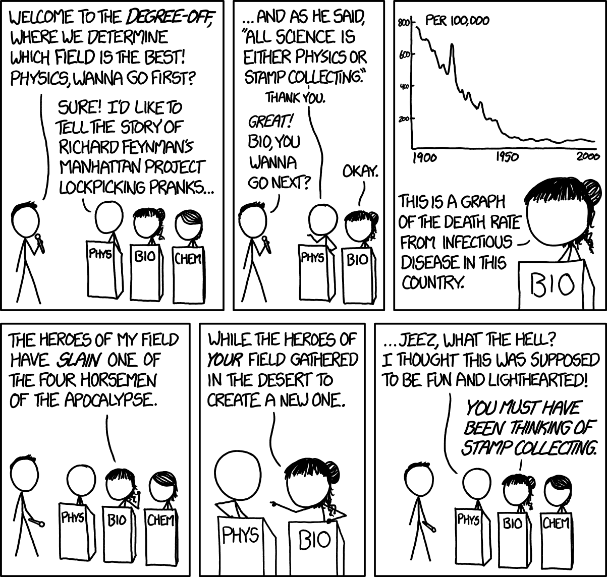

Biology is messy
Biology is not messy because biologists lack rigor. Despite being one of the few truly falsifiable sciences, it is messy because it still lacks many reductionist theories that work across scales. Falsifiability only tells us that a claim can be tested and potentially proven wrong. In biology, we see falsifiability constantly, but the issue is that the claims posited from the research hold only within tight constraints. Once the underlying context changes, the theory crumbles. This is what separates biology from the physical sciences. Physics and chemistry are cleaner not because they are simple, but because their core theories can absorb complexity without losing predictive power. Biology has plenty of facts, mechanisms, and experimentally defensible theories, but much of it is phenomenological rather than reductionist. The theories describe patterns within a regime without deriving them from underlying principles. They can be tested and used, but they fail once moved outside the system where they were discovered.1

source: https://xkcd.com/1520/
Reductionist theory
Reductionist theories enable scientists to explain complex systems from lower-level models while limiting how much error is introduced as the theory scales upward. Physics has the most developed version of this. Newtonian gravity compresses a wide range of phenomena into a compact mathematical equation that can describe falling objects, planetary motion, tides, and satellite dynamics without requiring major changes for each case. General relativity goes further and has held up across solar-system, gravitational-wave, and cosmological regimes.2 Chemistry, while messier, has a similar advantage. Its theoretical base connects what happens between a few molecules with what happens in bulk matter. Quantum mechanics explains bonding and molecular stability at small scales. Statistical mechanics and thermodynamics then translate those interactions into ensemble behavior, while kinetics adds a way to reason about how fast those transformations occur. Density functional theory and multiscale modeling show how chemical theory can move between simulation and experiment across different levels of organization.3 Physics and chemistry are not finished, but they maintain a theory-based reductionist core to continue correcting and expanding from.
Biology is different
Biology also has central theories with explanatory power such as theories for evolution and heredity. The issue is that these theories do not scale with the same precision, either on their own or when layered across levels of organization. The central dogma describes the directional flow of genetic information from DNA to RNA to protein, but it is not reductionist since it cannot be used beyond that flow for questions like whether a cell will show a phenotype. Mendelian inheritance gives rigorous predictions for certain traits, but those traits must be in the rare few that qualify as Mendelian traits. The problem is that these and most biological theories become conditional quickly.4 This is also why simply saying biology reduces to physics does not solve the problem. Biology still operates within the same physical and chemical constraints as the rest of the natural world, but direct physical reduction loses practical value once the system has the properties of life. A cell is not just a large chemical mixture. It is a non-equilibrium system that maintains itself and carries inherited information through a history of selection. The physics and chemistry are still there, but they are embedded inside a system whose behavior depends on biological context and prior state.5
Another huge reason we do not see a large push for reductionist theory in biology is incentives. Biological research is heavily shaped by applied problems, especially human health. The NIH's mission reflects this directly. It combines fundamental knowledge about living systems with the goal of improving health, and its funding categories organize much of that work around diseases and conditions.6 Structures like this pull the field toward exception-understanding. For example, in oncology, one of the best-funded research areas, researchers are rewarded for explaining why a tumor that should respond to treatment does not. Narrow focuses like this train the field to think in local systems rather than general principles. Over time, biological knowledge accumulates around narrower contexts. Local knowledge often works in biology and solves the targeted problem, but a field organized around local exceptions should not be expected to produce general theories easily.
Why this matters now
It would be wrong to say biology has no theory. Darwin was trying to explain the general mechanism behind adaptation and biological change. Mendel was trying to extract general rules of inheritance from a narrow experimental system. Biology was built on the same theoretical impulse as the physical sciences, and there are still parts of the field where theory does serious work.7 The issue is that, over time, theory stopped being the organizing spine of biology in the way it remains for physics and chemistry. The creation of new institutions focused on theory and mathematics in biology is a positive sign, but it also proves the point. If theory were already central to biology, the field would not need a special institutional push to build a community around uncovering the rules of life.8
Physics and chemistry are closer to forward-engineering sciences because their theories often start from lower-level principles and still remain accurate at higher levels. Biology is not there. It remains much more inductive and relies on reverse engineering from observation. This is another reason why those entering the field because of AI and computational advances need to be careful. Many of the people entering biology are used to domains where reductionist theories and first-principle foundations scale cleanly. That expectation will break quickly here and will not change quickly. Biology's incentives will ensure the field keeps producing data around local deviations, and AI advances will similarly get pulled into that pattern. AI tools can help accelerate the search for reductionist theories, but only if they are used to test which local mechanisms generalize. If AI tools are only used to fit each local system more precisely, they will scale phenomenology instead of producing reduction. That reinforces the incentives that keep biology fragmented.
The important question is whether the wide breadth of inductive observation and the latest AI advances can be combined to start discovering enough reductionist theories to make forward engineering in biology realistic. We are not there yet, and the answer is not to collect more localized data and train models that overfit it.
A path to breaking through is to design experiments that reveal which local mechanisms generalize. AI can help with this, but it is not a replacement for identifying core theories. Anyone entering biology who expects to rely on reductionist theory should expect to fight the field's drift toward fragmentation. To become a less messy, reductive science, biology does not need more disconnected facts. It needs more reductionist theories that scale precisely.
Endnotes
-
Popper's falsifiability criterion separates scientific testability from verification or theoretical maturity. A universal claim can be logically falsified by a genuine counterexample, but in practice scientific theories are retained amid anomalies, measurement complications, and auxiliary assumptions. https://plato.stanford.edu/entries/popper/
-
Newtonian gravity is a compact physical law that holds across a wide range of phenomena. General relativity has been tested across solar-system, gravitational-wave, and cosmological regimes. https://pwg.gsfc.nasa.gov/stargaze/Sgravity.htm
-
The 1998 Nobel Prize in Chemistry recognized density functional theory and quantum-chemical computational methods; the 2013 prize recognized multiscale models for complex chemical systems and noted that computer simulations had become crucial to modern chemistry. https://www.nobelprize.org/prizes/chemistry/1998/press-release/ and https://www.nobelprize.org/prizes/chemistry/2013/press-release/
-
A 2023 review in Frontiers in Synthetic Biology contrasts the universal principles of physics and chemistry with the still-contested search for governing principles unique to biology. https://www.frontiersin.org/journals/synthetic-biology/articles/10.3389/fsybi.2023.1296513/full
-
Mayr's "autonomy of biology" argument preserves physical law while emphasizing that living systems also involve genetic programs, historical explanation, population thinking, and context-dependent organization. Stanford's overview of reductionism in biology frames why deducing higher-level biological properties from lower-level descriptions remains philosophically and scientifically contested. https://s10.lite.msu.edu/res/msu/botonl/b_online/e01_2/autonomy.htm and https://plato.stanford.edu/entries/reduction-biology/
-
NIH describes its mission as both seeking fundamental knowledge about living systems and applying that knowledge to improve health. Its RCDC system publicly reports funding through research, condition, and disease categories. https://www.nih.gov/about-nih/mission-goals and https://report.nih.gov/funding/categorical-spending
-
Shou, Bergstrom, Chakraborty, and Skinner argue in eLife that theory has a rich history in biology, but also note the persistent divide between theoretical and empirical biology and the special difficulty created by biological heterogeneity and multiscale interactions. https://elifesciences.org/articles/07158
-
The NSF-Simons National Institute for Theory and Mathematics in Biology describes its mission as integrating mathematics and biology to uncover the "rules of life." Its existence is a positive signal, and also evidence that this theoretical infrastructure is still being built. https://www.nitmb.org/